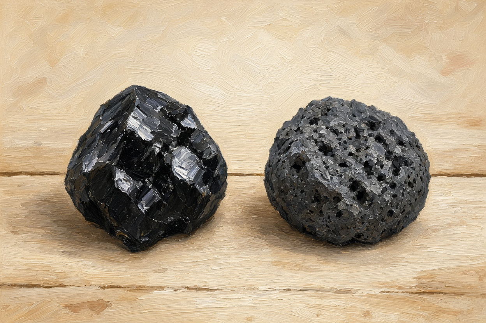

Coal and charcoal Coal and charcoal פחם ופחם-עץ פחם ופחם-עץ
By the end of this page, tell coal and charcoal apart. By the end of this page, compare coal with charcoal. בסוף העמוד תוכלו להבדיל בין פחם לפחם-עץ. בסוף העמוד תוכלו להשוות בין פחם לפחם-עץ.
Put what you found into the table. One column is for the coal. The other is for the charcoal. Organize what you observed in the table. Use one column for the coal and the other for the charcoal. סדרו בטבלה את מה שמצאתם. טור אחד לפחם, וטור אחד לפחם-העץ. ארגנו בטבלה שלפניכם את המידע שאספתם, כל דבר בטור המתאים.
Charcoal A word: charcoal פחם-עץ פחם-עץ
Charcoal is פחם-עץ. People make it from wood. Coal is the rock from under the ground. They are not the same. Charcoal, called פחם-עץ in Hebrew, is made by heating wood. Coal is a rock dug from the ground. The names are close, but the materials are different. פחם-עץ מכינים מעץ. פחם הוא סלע שמוציאים מהאדמה. אלה לא אותו דבר. פחם-עץ מפיקים מעץ בחימום. פחם הוא סלע שכורים מן האדמה. השמות קרובים, אבל החומרים שונים.
| Coal Coal פחם פחם | Charcoal Charcoal פחם-עץ פחם-עץ | |
|---|---|---|
| Color Color צבע צבע | ||
| How it feels Texture מישוש מירקם | ||
| Shine Shine ברק ברק | ||
| How it breaks How it breaks שבירה שבירות | ||
| Floats or sinks Floats or sinks in water צף או שוקע צף או שוקע במים | ||
| Anything else Other properties עוד דברים תכונות נוספות |
Hold the charcoal next to the coal. Think about what you already know about charcoal. How are the two lumps the same, and how are they different? Write that in your notebook. Take the lump of charcoal and set it beside the lump of coal. Recall what you have learned about charcoal. In what ways are they alike, and in what ways are they different? Write the comparison in your notebook. קחו את גוש פחם-העץ והניחו אותו ליד גוש הפחם. היזכרו במה שאתם יודעים על פחם-עץ. במה הם דומים ובמה הם שונים? כתבו במחברת. קחו את גוש פחם-העץ והניחו אותו ליד גוש הפחם. היזכרו במה שלמדתם על פחם-העץ. במה שני הגושים דומים, ובמה הם שונים? רשמו את ההשוואה במחברת.

A question A question שאלה שאלה
Now that you know coal and charcoal, can you tell them apart? After you have come to know coal and charcoal, can you tell these two fuels apart? אחרי שהכרתם פחם ופחם-עץ, אתם יכולים להבדיל ביניהם? לאחר שהכרתם פחם ופחם-עץ, התוכלו להבדיל בין שני חומרי הדלק האלה?
Remember: people make charcoal from wood. Nobody makes stone coal. It is a natural rock. Remember: charcoal is made from wood, much as you may have done in class. People do not make stone coal. It is a natural rock. זכרו: פחם-עץ מכינים מעץ. את פחם-האבן אף אחד לא מכין. זה סלע מן הטבע. זכרו: את פחם-העץ מייצרים מעץ, בדרך דומה למה שאפשר לעשות בכיתה. את פחם-האבן אין האדם מייצר. זהו סלע טבעי.